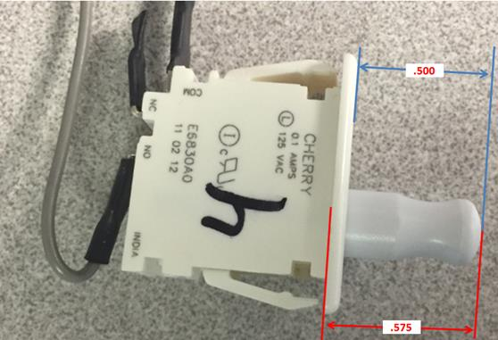
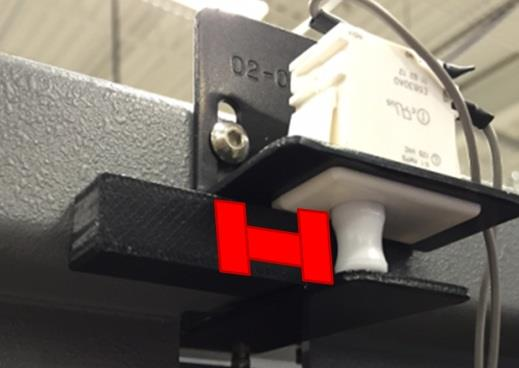

Adjusting SPU - On-load Cover Interlock
This procedure describes how to adjust the sample presentation unit (SPU) load cover interlock switch to the ideal height (0.5" between the striker plate & white plastic mounting holding interlock switch onto the bracket).
Required Materials:
- Red Interlock Switch Bypass Tool, a.k.a. "dogbone" (P/N 7416A)

-
Adjust SPU on-load cover interlock switch to proper height.
- Ensure the system is in ready or not ready.
- Open the top left cover to access the SPU on-load cover interlock switch and mounting bracket. Leave the SPU on-load cover closed.
- Loosen the two 3/32" hex screws holding the mounting bracket in place until the bracket moves freely. Do not remove the screws.
-
Set the height to 0.5" using the Interlock Switch Bypass Tool as a spacer. The tool is 0.5" wide at the end.

- Tighten the two 3/32" hex screws to secure the mounting bracket in place.
- Close the SPU on-load cover and reinitialize.
-
Verify the proper operation of the SPU.
- Verify that all alignment tools are removed from the instrument.
- Confirm the switch functions by opening & closing the on-load cover and verifying the SPU on-load pusher activates & lock engages.